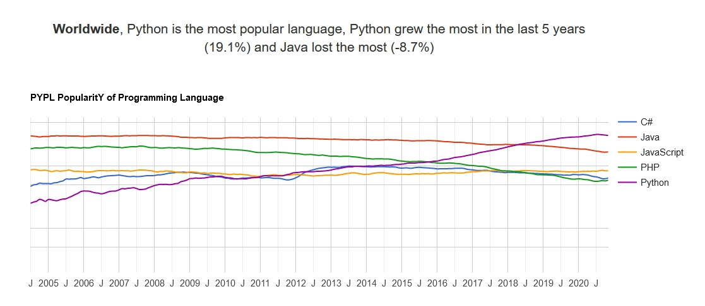

Добро пожаловать на ваш первый урок по JavaScript!
В этом уроке вы узнаете про такой полезный и интересный язык как JavaScript, а также увидите, в каких областях он применяется и даже увидите некоторые интерактивные примеры его использования.

Общие сведения о языке JavaScript
JavaScript (часто просто JS) — это легковесный, интерпретируемый, объектно-ориентированный язык с функциями первого класса. Наиболее широкое применение находит как язык сценариев веб-страниц, но также используется и в других программных продуктах, например, node.js или Apache CouchDB. JavaScript — это прототипно-ориентированный, мультипарадигменный язык с динамической типизацией, который поддерживает объектно-ориентированный, императивный и декларативный (например, функциональное программирование) стили программирования.
В статье «The World’s Most Misunderstood Programming Language Has Become the World’s Most Popular Programming Language» (с англ. — «Самый неправильно понятый язык программирования в мире стал самым популярным в мире языком программирования») Дуглас Крокфорд утверждает, что лидирующую позицию JavaScript занял в связи с развитием AJAX, поскольку браузер стал превалирующей системой доставки приложений. Он также констатирует растущую популярность JavaScript, то, что этот язык встраивается в приложения, отмечает значимость языка.
Согласно TIOBE Index, базирующемуся на данных поисковых систем Google, MSN, Yahoo!, Википедия и YouTube, в апреле 2015 года JavaScript находился на 6-м месте (год назад — на 9-м). По данным Black Duck Software (англ.), в разработке открытого программного обеспечения доля использования JavaScript росла. 36 % проектов, выпуски которых состоялись с августа 2008 по август 2009 гг., включают JavaScript, наиболее часто используемый язык программирования с быстрорастущей популярностью. 80 % открытого программного обеспечения использует Си, C++, Java, Shell и JavaScript. При этом JavaScript — единственный из этих языков, чья доля использования увеличилась (более чем на 2 процента, если считать в строках кода).
Зачем нужен JavaScript?
С помощью JavaScript можно создать интерактивность для клиента: форма для регистрации или заявка на подробное описание товара, а также кнопка «подписаться».
Сейчас JavaScript — единственный язык программирования для браузеров. Он работает под Windows, macOS, Linux и на мобильных платформах, то есть везде. Если не знаешь JavaScript, делать в программировании интерактивных сайтов нечего.
Где используется JavaScript?
Для большинства специалистов веб-разработка остается единственной областью применения JavaScript. Многие начинающие даже уверены, что эффективно использовать его где-то еще просто не получится. Такое существует устоявшееся мнение: истинные размеры использования JavaScript за пределами веб-разработки чрезвычайно невелики. Причин называют много: он проигрывает конкуренцию другим языкам и подходит далеко не для всех проектов.
Но есть мнение и прямо противоположное. JavaScript-фреймворки творят настоящие чудеса и позволяют использовать JS абсолютно везде! Истина, как водится, где-то посередине.
Мы расскажем о тех направлениях, где вы можете программировать на JavaScript и добиваться совершенно выдающихся результатов.
Интернет вещей (IoT) - отрасль, в которой значение JavaScript только возрастает, а новые JS-инструменты появляются буквально каждый день. В IoT распространена платформа Arduino (микрокомпьютер для встраиваемых систем управления). Есть масса фреймворков, которые позволяют осуществлять аппаратное программирование этой платы на JavaScript. Скажем об оcновных.
Johnny-Five - главный фреймворк для программирования робото-техники, выпущенный в 2012 году. Совместим со всеми моделями Arduino, для работы с аналогами есть набор из специальных плагинов. Также модель Arduino поддерживает микроконтроллер Tessel 2, который программируется на JavaScript.
Другой универсальный инструмент для управления робототехники - фреймворк Cylon.js. Он поддерживает 36 различных платформ. Его советуют выбирать для работы в 2019 году. Поддерживает декларативный синтаксис, поэтому относительно прост в использовании.
Отдельно выделим JerryScript (сверхлегкий, для программирования устройств с самым маленьким объемом оперативной памяти), Nodebots и Silk. Последний позволяет заниматься аппаратным программированием Android-устройств с помощью JavaScript.
Стоит упомянуть и про квадрокоптеры. Именно здесь проникновение JavaScript в робототехнику ощущается особенно сильно - целый ряд современных серийных моделей по умолчанию оснащены операционной системой, которая поддерживает Node.js.
Самое популярное решение в области баз данных - использование БД MongoDB в связке с Mongoose ORM. Существует даже заблуждение, что это чуть ли не единственная возможность использовать JavaScript в работе с БД. Однако драйвера для Node.js есть и у большинства других баз данных. Более того, другие связки технологий оказываются на практике не менее простыми и удобными в использовании.
Но если уж говорить о трендах наступившего года, то выделим GraphQL, разработанный Facebook. Технология обещает стать доминирующей благодаря таким реализациям как платформа Apollo. Она позволяет создавать чрезвычайно мощный и гибкий API и выигрывает конкуренцию у других инструментов. Можно упомянуть и пока малоизвестный фреймворк Hapi.js. По отзывам разработчиков, он отлично подходит для тех, кто хочет добиться максимального контроля над процессом.
Недостатки языка JavaScript
Несмотря на большую популярность языка JavaScript, наивно полагать, что он будет идеален во всём - в JavaScript есть ряд недостатков, которые могут ограничить области применения языка, которые, впрочем, могут быть расширены благодаря тем же самым фреймворкам и библиотекам, нивелирующим определённые недостатки языка.
Основные недостатки языка JavaScript:
Примеры использования JavaScript
И вот, наконец, после того, как мы познакомились с таким необычным языком как JavaScript, мы приступаем к самому интересному - наглядным примерам использования возможностей языка.
Для начала давайте познакомимся :)
Нажмите на кнопку "Ввести имя" под этим текстом и введите свои имя и, по возможности, фамилию. После введения будут открыты все дальнейшие примеры.
Как же вызвать такое окошко, в которое вы ввели имя?
В JavaScript существует 3 типа всплывающих окон: alert, prompt и confirm. Данные окна вызываются с помощью функций JS. Синтаксис следующий:
Также стоит помнить, что работу в браузере невозможно продолжить, не закрыв данные всплывающие окна нажатием на одну из их кнопок.
Ниже вы можете увидеть 3 кнопки. При нажатии на каждую из них, вы увидете всплывающее окно.
Вы наверняка знаете, что для создания кнопки используется HTML-тег <button>, но как же заставить её выполнять JS-код при нажатии?
Для этого используется атрибут onclick = "". В кавычках пишется код на языке JavaScript. Пример вы можете увидеть ниже:
Фрагмент HTML-кода
Результат
2
3
4
confirm('Подтвердите, что вы' +
' поняли данную тему')
">Текст внутри кнопки</button>
Площадь треугольника
Идём дальше. Ниже расположены 2 формы для ввода текста. Данные формы созданы с помощью HTML-тега <input> и атрибута type = "text". Введите в эти формы 2 числа и нажмите на кнопку ниже "посчитать". Ниже вместо надписи "Здесь будет выведена площадь треугольника" вы увидите число, равное подсчитаной площади.
Основание треугольника
Высота треугольника
Здесь будет выведена площадь треугольника
Как и до этого, действие по нажатию кнопки происходит благодаря атрибуту onclick = "". Но как можно получить значения, введён-ные в формы?
В JavaScript для получения доступа к какому-либо объекту можно использовать функцию document.getElementById(element_id). element_id - это то, что указано в атрибуте id = "" у элемента в коде HTML. Чтобы у наших элементов (у форм) получить введённое значение, нам нужно свойство value (document. getElementById(element_id).value). Теперь-то с этими значениями можно работать и получить из них, например, площадь треугольника по высоте и основанию. Для записи значений используется та же функция, но у нужных элементов необходимо использовать свойство innerHTML, куда уже можно записать любой текст. Далее описан один из наиболее простых способов, как это можно сделать.
Фрагмент HTML-кода
Результат
2
3
4
5
6
7
8
<input type="text" id="height">
<button onclick="
let a = document.getElementById(
'base').value;
let h = document.getElementById(
'height').value;
document.getElementById(
'squareIs').innerHTML =
'Ответ: ' + (a * h / 2); ">Посчитать</button>
<p id = "squareIs">Ответ: </p>
Ответ:
Сравнение размеров строк
В следующем примере мы используем аналогичную конструкцию из 2 форм для ввода текста, но код JS будет выглядеть немного иначе:
Результат:
Если количество символов в строках одинаковое, возвращается true, а иначе false.
Данный пример очень похож на предыдущий. Из нового здесь только свойство length, которое есть у строк. Например, ("hello!".length == 6) - это true. Рекомендуем попробовать самостоятельно написать этот код, опираясь на предыдущий пример с площадью треугольника (по сути, кроме кода внутри атрибута onclick = "", можно ничего не менять).
Массив из 5 чисел
Через те же формы можно создать даже массив - ниже расположены 5 форм для ввода чисел. По нажатию кнопки вы увидите отдельно выведенные наибольшее и наименьшее значения.
Результат:
В данном задании используются всё те же функции, что и в предыдущих заданиях. Важно лишь знать, как использовать массивы в JavaScript. Вот несколько примеров работы с массивами:
Небольшой тест
А теперь давайте пройдём небольшой тест по JavaScript, в котором упоминаются материалы из этого сайта. В конце теста вы узнаете ваш результат. Время неограничено.
Постарайтесь не подглядывать :)
Вопрос 1. Без каких трёх основных элементов не обходится современная веб-разработка?
Вопрос 2. Сколько видов всплювающих окон существует в JavaScript?
Вопрос 3. С помощью какой функции, метода или свойства можно получить доступ к HTML-элементу?
Вопрос 4. Что получится, если переменную, не являющуюся числом, поделить на 2?
Вопрос 5. Что из нижеперечисленного является условным оператором?
Вопрос 6. Что можно узнать с помощью свойства length?
Вопрос 7. С помощью какой функции или метода можно добавить элемент в массив?
Вопрос 8. В какие скобки обрамляется массив в JavaScript?
Вопрос 9. Что можно узнать с помощью свойства value?
Вопрос 10*. Что появится в HTML-элементе c ID "elem" после
выполнения данного кода на JavaScript:
document.getElementById("elem").innerHTML =
"Hello <b>world!</b>";
Заставка на весь экран
При нажатии на кнопку под этим текстом, вы откроете всплывающее окно на весь экран. Чтобы его убрать, нажмите на любое место.
Текущая дата:
Имя пользователя:
рверепыыпы efwfwefe fewwfewef efwwfe
Чтобы закрыть окно, нажмите ЛКМ в любом месте окна
Таймер
Введите часы:
Введите минуты:
Введите секунды:
00:00:00
На этом краткий экскурс по языку JavaScript подошёл к концу. Надеюсь, вас заинтересовал данный язык, ведь знание это прекрасного языка в наше время - навык очень полезный. В интернете полно материала по JavaScript, благодаря чему даже самостоятельно изучать данный язык просто и, самое главное, интересно. Желаем вам в удачи в вашем продвижении в сфере веб-разработки и не только ;)
Напомним, что вы можете самостоятельно поизучать сайт на примере любого сайта, в том числе и нашего - просто нажмите ПКМ в любом месте сайта и из выпавшего списка выберите "Просмотреть код элемента".